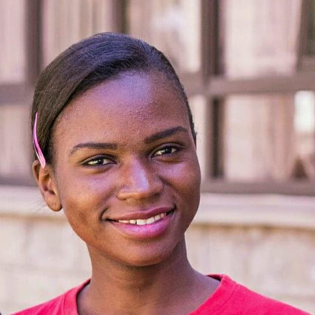
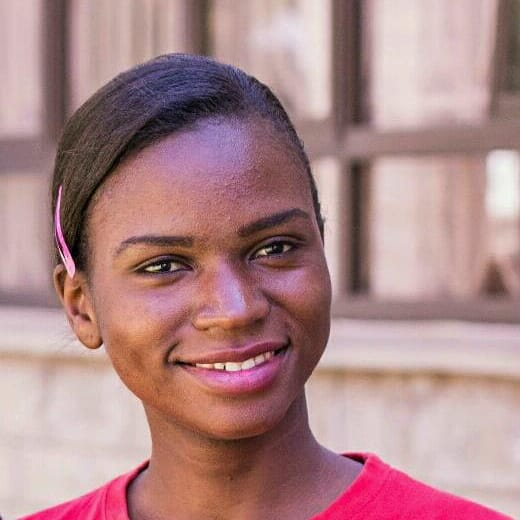

About Me
Hello, I am a passionate web developer based in Nairobi, Kenya, and I'm excited to share my journey in web development. Currently, I am a student at BYU-Idaho, where I am actively pursuing a degree in Web Development. Since Childhood, I found myself drawn to the world of computers. My fascination with this ever-evolving field is what led me to the world of web design. Over time, I have developed a deep love for creating websites that provide users with an enjoyable experience.
Skills and Expertise
As I began my journey into web development, I have worked diligently to become proficient in the fundamental building blocks of web development: HTML and CSS. These two languages are the backbone of any web project and mastering them is crucial to creating beautiful and functional websites. My goal is to create web experiences that are visually appealing and easy to navigate.
Join Me On My Journey
I invite you to join me on my journey as I continue to explore the dynamic world of web development. Whether you're a fellow developer, a business owner looking for a reliable web solution, or someone simply interested in the web development process, I'm eager to connect, collaborate, and learn from each other. Thank you for taking the time to explore my portfolio, and I look forward to connecting with you to discuss potential collaborations, projects, or any inquiries you may have.